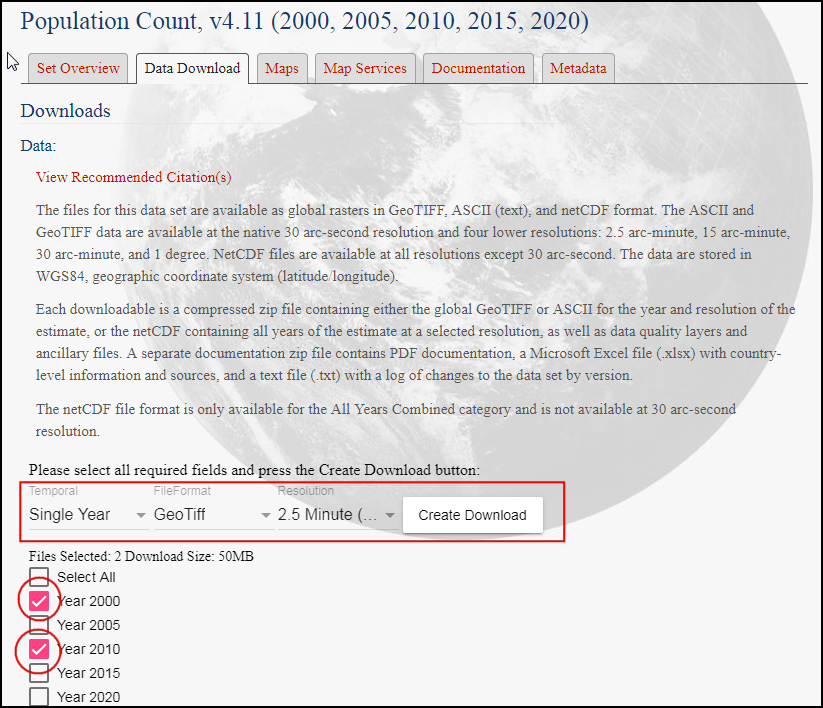
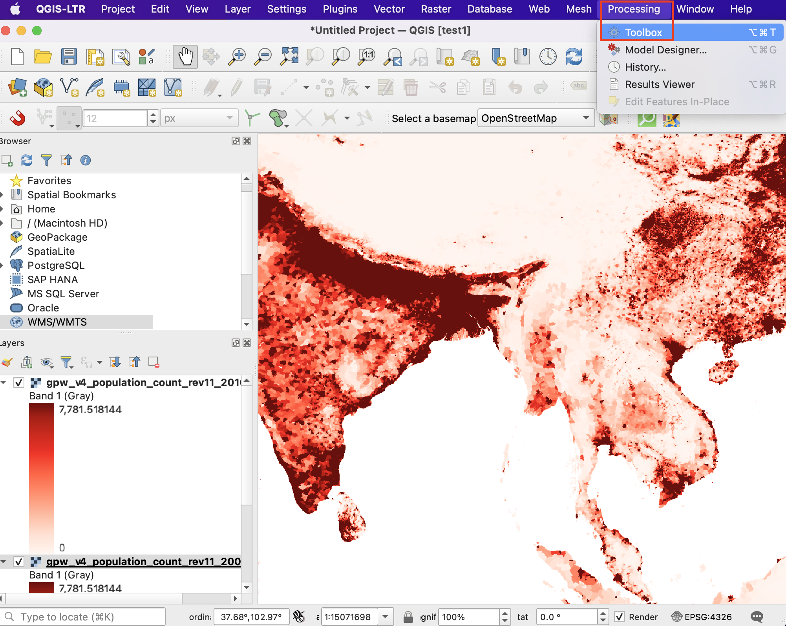

Einfache Visualisierung und Analyse von Rasterdaten (QGIS3)¶
Viele wissenschaftliche Beobachtungen und Forschungen erzeugen Rastendaten. Rasterdaten sind Gitter von Pixeln mit bestimmten Werten. Mit Hilfe von mathematischen Operationen auf den Pixelwerten kann man interessante Analysen durchführen. QGIS hat einige einfache Analysemöglichkeiten im Rasterrechner integriert. In dieser Anleitung werden wir die Möglichkeiten zur Darstellung von Rasterdaten und die Funktionalität des Rasterrechners erkunden.
Überblick über die Aufgabe¶
Wir werden einen Gitterdatensatz der weltweiten Bevölkerung benutzen, um eine thematische Karte der Bevölkerungsentwicklung zwischen den Jahren 2000 und 2010 zu erstellen.
Weitere Fähigkeiten die wir erlernen¶
Wie man einen Layerstil zwischen Layern kopiert
Beschaffung der Daten¶
Wir werden folgenden Datensatz der Columbia University benutzen: Gridded Population of the World (GPW) v4. Im Detail brauchen wir Population Count für die gesamte Erde mit einer Auflösung von 2,5 geografischen Minuten im GeoTIFF Format für die Jahre 2000 und 2010. Man benötigt einen kostenloses Nutzerkonto, um die Daten herunterzuladen: Earth Data account.
Der Einfachheit halber können wir eine Kopie der Datensätze unter folgenden links herunterladen:
gpw-v4-population-count-rev11_2000_2pt5_min_tif.zip
gpw-v4-population-count-rev11_2010_2pt5_min_tif.zip
Datenquelle [GPW4]
Arbeitsablauf¶
Wir öffenen QGIS und gehen im Browser zu den heruntergeladenen Dateien. Erweitere die
gpw-v4-population-count-rev11_2000_2pt5_min_tif.zipDatei und ziehe die Dateigpw-v4-population-count-rev11_2000_2pt5_min.tifin den Arbeitsbereich.

Der neue Layer
gpw-v4-population-count-rev11_2000_2pt5_minwird nun im Bereich Layer angezeigt. Analog verfahren wir mit der Dateigpw-v4-population-count-rev11_2010_2pt5_min_tif.zip. Wir erweitern sie und ziehen die Dateigpw-v4-population-count-rev11_2010_2pt5_min.tifin den Arbeitsbereich.

Wir schauen uns die Layer näher an. Klicke auf den Knopf Objekte abfragen in der Attributwerkzeugleiste. Nach Auswahl des Tools können wir in einen beliebigen Bereich der Arbeitsfläche klicken.

Der zu dem jeweiligen Pixel gehörende Wert wird in einem neuen Bereich Identifikationsergebnis angezeigt. Wir ändern im Identifikationsergebnis den Modus zu
Von oben nach unten. Damit werden die Pixelwerte aller Rasterlayer angezeigt und nicht nur die des obersten Layers. Wir können die Werte der beiden Layer vergleichen. Die Auflösung der Rasterzellen beträgt in etwa 5 km x 5 km. Die Pixelwerte stellen die Bevölkerungssumme bezogen auf die Fläche des Pixels dar (25 km²).

Wir schließen das Identifikationsergebnis. Wir werden jetzt eine bessere Darstellung der Layer erzeugen. Klicke auf den Knopf Layergestaltungsfenster öffnen im Bereich Layer.

Im Fenster Layergestaltung wählen wir im Dropdown-Menü neben Symbolisierung die Darstellung
Einkanalpseudofarbe.

Diese Darstellung stellt den Layer mit Hilfe eines Farbverlaufes dar. Der voreingestellte Farbverlauf ist weiß zu blau, wobei dem minimalen Wert des Layers weiß und dem maximalen Wert blau zugeordnet ist. Die dazwischen liegenden Werte werden als Farbverlauf verschiedener Blautöne dargestellt. Erweitere die Min/Max-Werteinstellungen und wähle die Option
Kumulativer Zählschritt. Die Kartendarstellung sieht nun viel besser aus. Der vorgegebene Wertebereich umfasst nur die Werte zwischen 2 % und 98 % der Datenwerte. Die extremen Werte werden nicht angezeigt. Die Darstellung ist damit viel ansprechender.

Wir schließen die Layergestaltung. Eine ähnliche Darstellung können wir für den anderen Layer einstellen. Es gibt aber einen einfacheren Weg, um die Gestaltung von einem Layer auf einen anderen zu übertragen. Klicke mit der rechten Maustaste auf den Layer
gpw-v4-population-count-rev11_2010_2pt5_minund wähle .

Klicke jetzt auf den noch unveränderten Layer
gpw-v4-population-count-rev11_2000_2pt5_minund wähle .

Dieselben Darstellungsparameter werden nun auf den Layer angewendet. Diese Funktionalität ist besonders nützlich, wenn man verschiedene Layer anhand derselben Kategorisierung vergleichen möchte. Durch Umschalten der Sichtbarkeit des obersten Layers, sieht man die Veränderung der Bevölkerungszahlen.

Our task is to create a thematic map of the changes in population. Let’s compute the difference between the 2 layers and create another raster where each pixel represents the change in the population. Go to .

Look for Raster Calculator under Raster Analysis and double-click to open the tool.

Select both the layers using … button as Input Layers. The raster calculator can apply mathematical operations on the raster pixels. In this case we want to enter a simple formula to subtract the 2010 population from 2000. Enter the following expression using ε button. In the expression, The bands are named after the raster name followed by
@and band number. Since each of our rasters have only 1 band, you will see the names with@1appended to the layer name. Keep all the other options as default and save the output layer with the namepopulation_change_2010_2000.tifand click Run.
"gpw-v4-population-count-rev11_2010_2pt5_min@1" - "gpw-v4-population-count-rev11_2000_2pt5_min@1"
Nach Beendigung der Berechnung wird der neue Layer
population_change_2010_2000im Layer-Panel hinzugefügt. Wir werden jetzt die Darstellung anpassen, so dass man die Änderung der Bevölkerung besser erkennen kann. Klicke auf den Button Layergestaltungsfenster öffnen im Bereich Layer.

Eine Möglichkeit besteht darin, die gleiche Gestaltungstechnik wie zuvor zu verwenden und einen divergierenden Farbverlauf zu wählen. Klicke auf das Dropdown-Menü Farbverlauf und wähle
Spectral. Klicke erneut auf das Dropdown-Menü und wähleFarbverlauf invertieren, um niedrigen Werten Blautöne und hohen Werten Rottöne zuzuordnen.

Das ist eine gute Darstellung, die aber nicht leicht zu interpretieren ist. Wir erzeugen jetzt eine bessere Darstellung mit 4 Kategorien:
Abnahme,Unverändert,WachstumundStarkes Wachstum. Scrolle nach unten zur Tabelle mit der Klasseneinteilung. Halte die Shift-Taste gedrückt und selektiere alle Zeilen. Klicke auf den Button Gewählte Zeile(n) entfernen.

Ändere den Modus bei Interpolation zu
Diskret. Wir werden jetzt die Farben manuell zuweisen. Klicke auf den Button Werte manuell hinzufügen. Gib-100als Wert undAbnahmeals Beschriftung ein. Weise der Klasse blau als Farbe zu. Alle Werte kleiner als der verwendete Wert werden in der vorgegebenen Farbe der Klasse angezeigt. Wir bemerken, dass nur noch die Gebiete mit negativer Bevölkerungsentwicklung in der Karte angezeigt werden.

Vervollständige die Farbkarte mit geeigneten Werten. Ich wählte
100,1000und100000als Obergrenzen für die KategorienNeutral,WachstumundHohes Wachstum. Weise jeder der erstellten Kategorien Farben zu, zum Beispiel beige, orange und rot.

Nach Fertigstellung der gewünschten Darstellung, können wir das Fenster Layergestaltung schließen. Wir haben jetzt unsere globale thematische Karte der Bevölkerungsentwicklung fertig gestellt.

If you want to give feedback or share your experience with this tutorial, please comment below. (requires GitHub account)